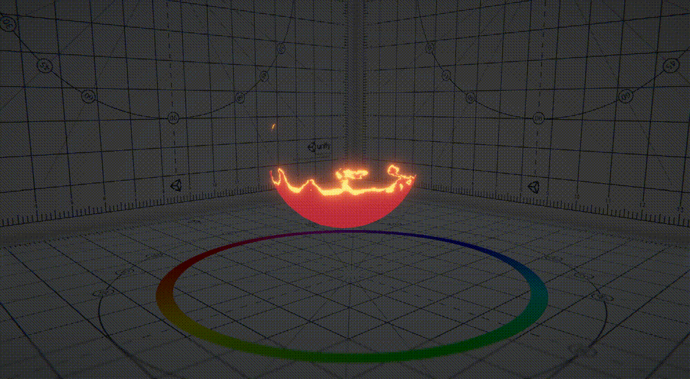
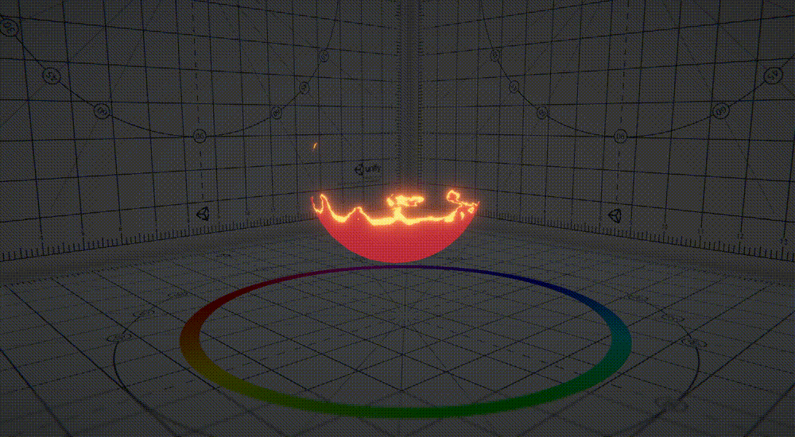

INTRODUCTION

SHADER
Translucent Shader
VIEW CODEJuly 20, 2019
Using various techniques to simulate translucency.
Go check my code to see how it works.
Unlit Waterfall Shader
VIEW CODE
July 20, 2019
Trying to express cartoon-like waterfall like the
one from Zelda. I am not that satisfied with the result shading, but yup still looks
nice at some point.
 

Burning Outline Shader
VIEW CODE

July 20, 2019
Burning effect is all calcurated in screen-space.
That`s the keypoint of this shader. Push the surface polygons a bit to the same
direction as normal vector in screen-space, which we can only concentrate on x and y
coordinate, and no need to care about z coordinate for calcuration, only for
adjustment.
Cross Hatching Shader
VIEW CODEJuly 20, 2019
I got ideas from the paper called 'Real-time
Hatching'. Customized their method and tried to improve it to make it more practical
in game-use.
GPU Raytracing with Unity
July 20, 2019
GPU Raytracing with C# and Compute Shader. There
are many tutorials on how to make GPU Raytracer with Unity, so I tested for
studying. It actually helped me a lot to understand the mechanism of path tracing.
Next time, I`ll try to import fbx model via C# and render it with path tracer.
Burning Effect Shader
VIEW CODE
July 20, 2019
Trying to simulate burning effect using noise
texture. Also using fire image for burning. So there we need a base texture for the
model`s detail and a noise texture for simulating fire-like animation, and a fire
image for burning outline.